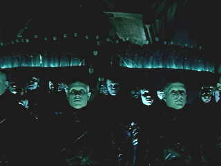

New Line/1998/96m/ANA,WS 2.35,.FS1.33
John Murdoch is the wild card. An experiment gone astray, Murdoch presents a threat to the world of The Strangers. They must find him, understand what went wrong, and correct the situation. The police are after John Murdoch too as a suspect in a grizzly series of sex murders. The story by director and co-writer Alex Proyas struggles a bit too hard in creating a world that borrows style and substance from attractive film periods. The "noir" elements are strictly heavy handed, but you've got to admire the effort.
Director Proyas and his team deliver some stunning visual effects. While The Strangers perform their communal creating they seem a sea of floating faces. Morphing cityscapes are brilliantly realized by the special effects team.
 |
Shades of Metropolis ©New Line |
The darkness of
this DVD is unrelenting. The few scenes containing daylight are brief, either in flashback
or real time. If I have one reservation about the quality of the image: I think it might
have been transferred slightly brighter. Now, I understand, that director Proyas is
working in shadows and the dark areas of human existence. Some of the subtle lighting
effects are spectacular on the DVD. This is a powerful soundtrack that contributes
bringing the stunning images to a greater reality.
Dark City is presented in a full blown special edition.
There are two audio commentaries. On track one, film critic Roger Ebert points out many
historical film references contained in the film. Ebert's observations are knowledgeable
and delivered in entertaining fashion. Commentary track two features Proyas, writers Lem
Dobbs and David Goyer, Direrctor of Photography Darius Wolski and Production Designer
Patrick Tatopoulos. Other features include comparisons to Fritz Lang's Metropolis
and a Shell Beach Interactive Game.
 ã1998
Stuart J. Kobak , all rights reserved.
ã1998
Stuart J. Kobak , all rights reserved.